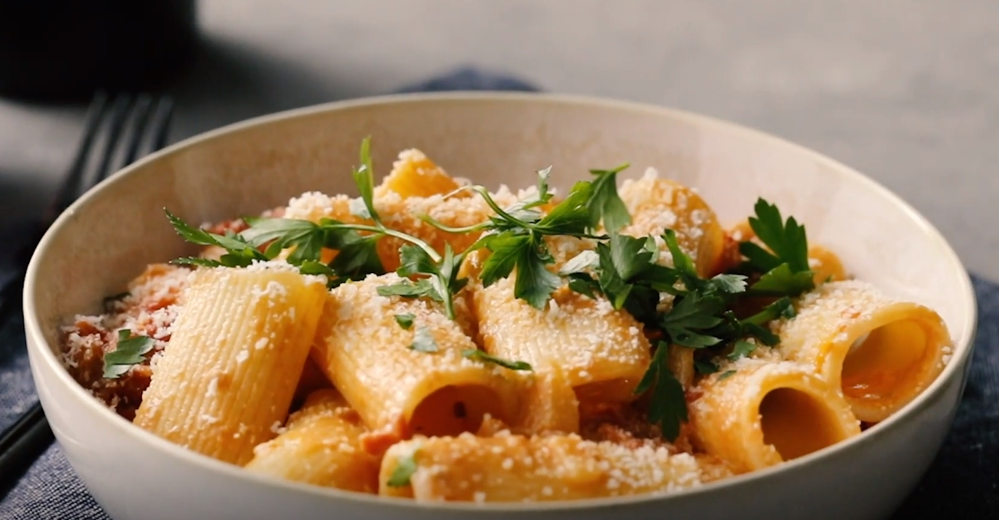

Creamy Tomata Rigatoni
Time: 45 mins Servings: 4
Recipes

The addition of cream and butter heightens this simple tomato sauce without making it heavy. It's special but not extravagant, a wonderful choice for any night of the week.
Recipe Origin
- 1/4 cup unsalted butter
- 1 cup chopped yellow onion
- 1 (28-ounce) can whole peeled plum tomatoes, tomatoes crushed by hand and juices reserved
- 12 ounces uncooked rigatoni pasta
- 1/2 cup heavy cream
- 1 teaspoon kosher salt
- 1/4 teaspoon black pepper
- 1/4 teaspoon crushed red pepper
- 1/2 ounce Parmesan cheese, grated
- Chopped fresh flat-leaf parsley, for garnish
- Gather the ingredients.
-
Melt butter in a large Dutch oven over medium. Add onion;
cook, stirring occasionally, until tender and golden brown, about 5 minutes.
-
Add tomatoes and their juices; bring to a boil over medium.
-
Reduce heat to medium-low; simmer, stirring occasionally, until flavors meld and sauce thickens, about 30 minutes.
-
Meanwhile, cook pasta in salted water according to package directions for al dente. Drain pasta, reserving 1/2 cup pasta cooking liquid.
-
Stir cream, salt, black pepper, and crushed red pepper into tomato sauce. Add cooked pasta and toss to coat.
-
Add reserved pasta cooking liquid, 1/4 cup at a time, until desired consistency is reached.
-
Divide pasta evenly among 4 bowls; sprinkle with Parmesan and garnish with parsley.